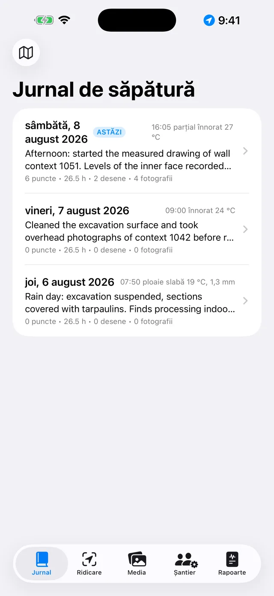
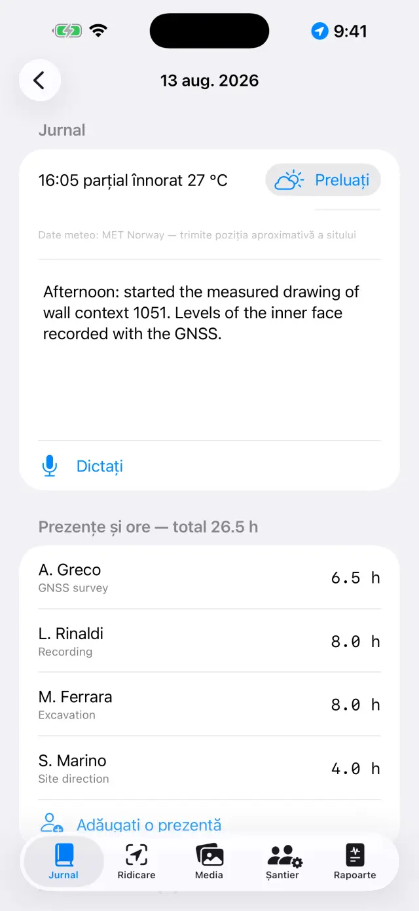
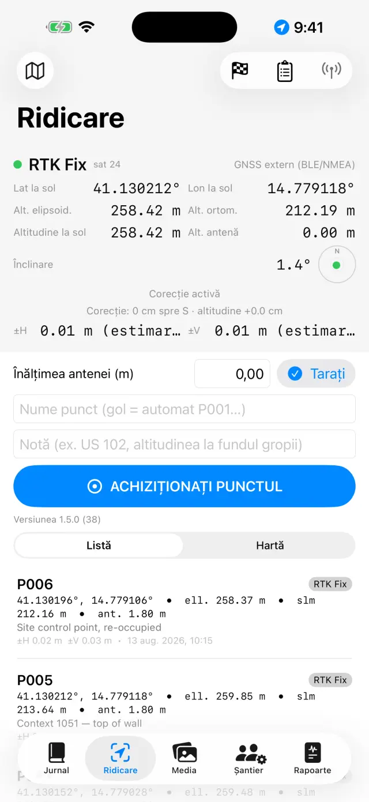
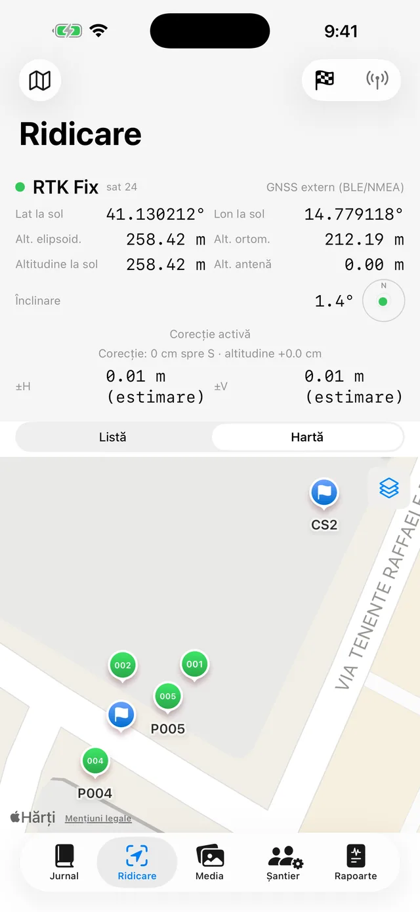
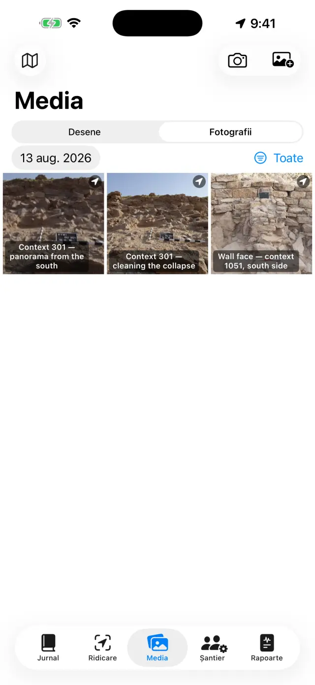
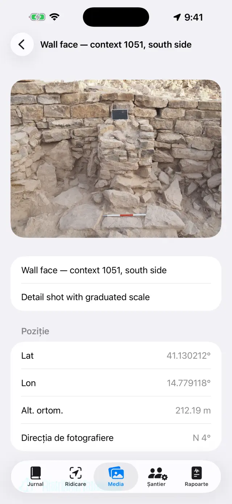
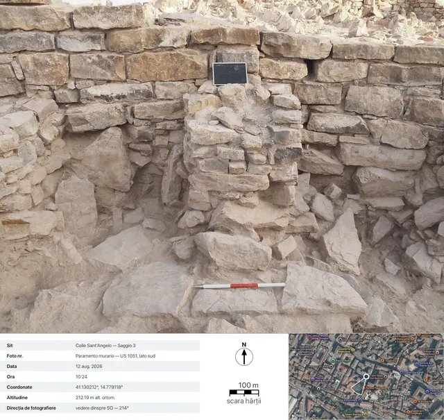
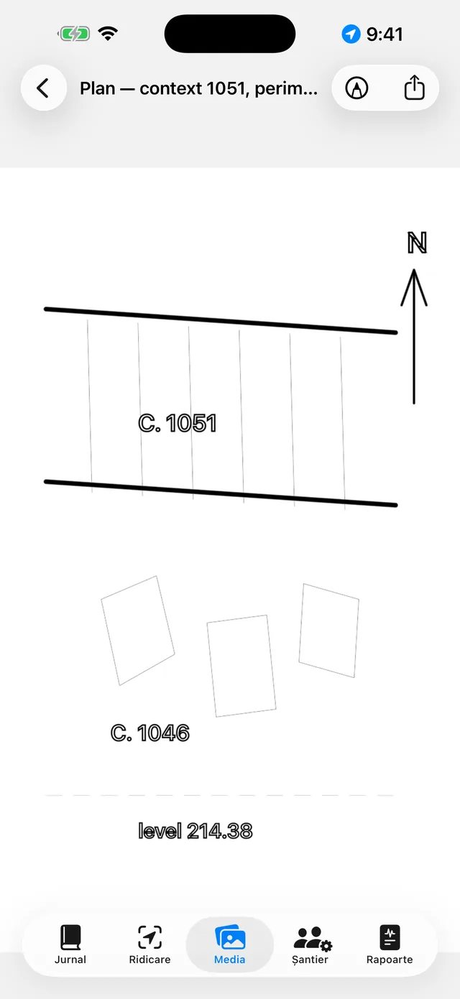
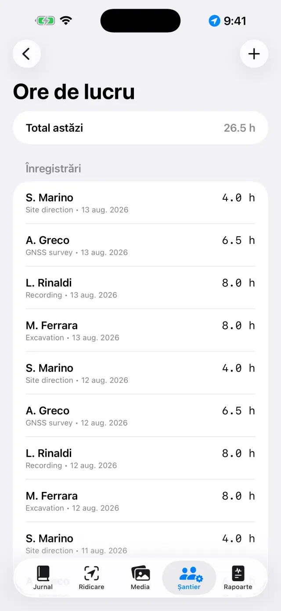
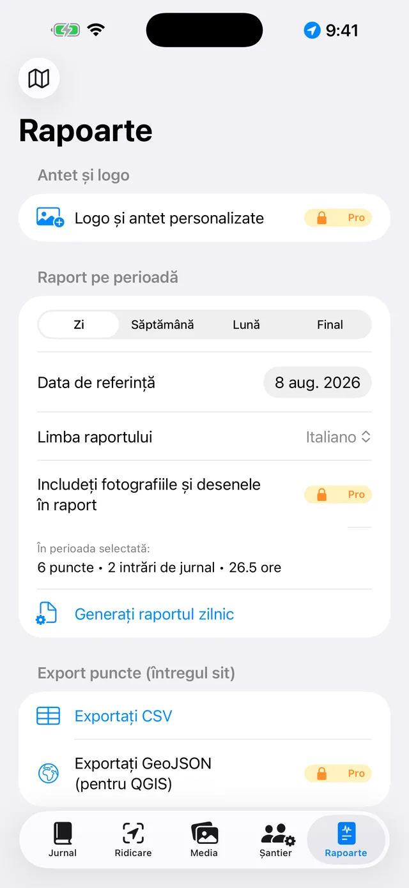

Jurnalul digital de săpătură pentru iPhone și iPad. 100% offline: datele dumneavoastră rămân pe dispozitiv.
Pe scurt
Totul se bazează pe o singură idee: fiecare zi de săpătură este o
pagină care se completează singură. Înregistrați lucrurile acolo unde
se petrec — un punct GNSS în Ridicare, o fotografie în Media, orele în
Șantier — iar pagina zilei din Jurnal le adună pe toate automat. La
sfârșitul săptămânii sau al săpăturii, rapoartele se generează singure
pornind de la pagini.
O zi obișnuită
DimineațaDeschideți pagina zilei, notați vremea și jurnalul (sau rostiți-l cu Dictați)
EchipaÎn Șantier înregistrați cine este prezent și orele fiecăruia
RidicareAchiziționați punctele GNSS; verificați un reper dacă folosiți RTK
FotografiiFotografiați din Media: coordonatele se atașează singure
DeseneDecalcați secțiunea sau planul pe o fotografie (calc digital)
SearaDin fila Rapoarte generați raportul zilnic: un PDF gata de trimis
Primii pași
La prima pornire găsiți deja un sit demonstrativ. Pentru a crea unul
propriu, atingeți numele sitului din partea de sus (pictograma 🗺)
→ Sit nou… și dați-i un nume (de ex. „Colle Sant'Angelo —
Sondaj 3”).
Numele sitului activ este mereu vizibil în partea de sus: toate filele
afișează datele acelui sit. Pentru a schimba situl, atingeți din nou numele:
lista se află sub titlul „Siturile dumneavoastră”, iar cu Redenumiți
situl… corectați un nume fără să pierdeți nimic.
Acordați permisiunile atunci când vă sunt cerute: locație
(pentru puncte), cameră (pentru fotografii), microfon
(pentru dictare), Bluetooth (doar dacă folosiți un receptor extern).
Cele cinci file
📓 Jurnal
Atingeți o zi pentru a-i deschide pagina: jurnalul, vremea, echipa,
punctele, fotografiile și desenele acelei zile sunt deja acolo.
Scrieți jurnalul sau atingeți Dictați și vorbiți: transcrierea
are loc pe dispozitiv și funcționează și fără rețea.
Vremea se scrie manual (de ex. „Senin, 28 °C, vânt slab”) sau se preia cu
Preluați, care cere condițiile de moment serviciului meteorologic
norvegian. Este nevoie de rețea și funcționează doar pentru ziua de azi:
vremea de ieri nu mai poate fi recuperată. O a doua atingere după-amiaza
adaugă o nouă măsurătoare. Ceea ce scrieți manual are întotdeauna prioritate.
La preluare, de pe dispozitiv iese doar poziția zonei rotunjită la
aproximativ 11 metri, iar în rapoarte rândul apare în limba raportului.

Lista zilelor

Pagina unei zile
📍 Ridicare
Panoul din partea de sus arată poziția în timp real: coordonate,
altitudini, precizia și tipul de fix (GPS / RTK Float / RTK Fix).
Dacă folosiți un jalon, setați Înălțimea antenei (m):
altitudinea punctului este redusă automat la sol.
Atingeți Achiziționați punctul. Numele este progresiv (P001,
P002…), dar puteți introduce unul propriu (de ex. „US 102 — fundul gropii”)
și adăuga o notă.
Comutați între Listă și Hartă pentru a vedea
punctele la fața locului; din hartă puteți activa cadastrul sau un alt
serviciu WMS.
Reperele (🏁) au propria lor secțiune: importați-le din CSV sau
creați-le, apoi deschideți Verificare în timp real și urmăriți
abaterile ΔN/ΔE/ΔZ cu vârful jalonului pe bornă, înainte de a începe
ridicarea.
Sub Carnete de nivelment se află carnetul de teren pentru
nivela optică: stații, citiri înapoi și înainte, altitudini calculate pornind
de la un reper de plecare, cu controlul de închidere. Punctele nivelate intră
în sit cu altitudinea lor, la fel ca cele GNSS.
Sub panou se află Înregistrări NMEA: fluxul brut al receptorului
extern PRO ajunge singur în fișiere — înregistrarea
pornește când aprindeți antena și se închide când o stingeți, fără să fie
nevoie să vă amintiți de ea. Folosește la recitirea unei zile îndoielnice sau
la predarea datelor brute celui care face post-procesarea. Fișierele se
distribuie și se șterg, în afară de cel al înregistrării în curs; lista se
deschide și cu receptorul stins, așa că fișierele de ieri rămân la îndemână.

Panoul GNSS al Ridicării

Puncte și repere pe hartă
Fiecare punct salvează ambele altitudini:
elipsoidală și ortometrică (alt. ortom.). Cu GPS-ul intern al telefonului,
altitudinea ortometrică poate să nu fie disponibilă: este nevoie de un
receptor extern (vedeți mai jos).
📷 Media
Fotografiați cu butonul camerei sau importați din galerie.
Fotografiile primesc un nume progresiv (F001, F002…) și sunt
georeferențiate cu ultima poziție GNSS disponibilă.
La declanșare, aplicația înregistrează și direcția de
fotografiere de la busolă: în detaliile fotografiei și în rapoarte
veți citi „vedere dinspre SO — 214°”, iar pentru fotografiile verticale
(plan, fundul unei US) apare mențiunea zenitală cu direcția marginii de sus.
Dacă busola este perturbată, aplicația vă avertizează.
Atingeți o fotografie pentru titlu și note (de ex. „US 102 dinspre nord”).
Distribuiți fișaPRO generează
fișa fotografică de documentare: fotografia cu datele de
sub ea (sit, număr, dată și oră, coordonate, altitudine, direcție), o vedere
din satelit cu marcatorul de poziție și conul de vizare, bara scării hărții
și săgeata nordului. Harta necesită rețea: fără ea, fișa este generată
oricum, cu panoul de date extins.

Galeria foto

Detaliile unei fotografii: coordonate, altitudine și direcția de fotografiere

Fișa exportată: datele fotografiei, vederea din satelit cu conul de vizare, bara scării hărții și săgeata nordului
✏️ Desene (în Media)
Creați o planșă nouă și alegeți o fotografie a sitului ca fundal: este
foaia dumneavoastră de calc digitală. Un desen poate continua pe parcursul
mai multor zile. Puteți și să nu o puneți, fotografia: pe foaia de calc albă
se desenează la fel de bine.
Decalcați straturile, secțiunile și pietrele cu degetul sau cu Apple
Pencil. Ciupiți pentru a mări (până la 6×, atingere dublă cu
două degete pentru a reveni la 1×). Dacă fotografia vă acoperă trăsătura,
alegeți din meniul camerei Opacitatea fundalului… și duceți-o unde
aveți nevoie, de la 5% la 100%: se estompează fotografia, nu desenul. Alegerea
rămâne pe planșă și este valabilă și în PDF, DOCX, PNG și în
Exportați cu legendă.
Tot restul se află sub Instrumente (cheia fixă din bară), care
este cuprinsul celor șase moduri: Casetă de text,
CalchierePRO, Scara
fotografiei, Punct cu altitudine, Hașură și
Stilul liniei. Se ține unul singur o dată: bifa
arată care, iar cât timp este aprins degetul nu desenează, ci comandă acel
instrument — pentru a reveni la desen, atingeți din nou opțiunea bifată. Cele
trei moduri care lucrează pe imagine (decalcul, scara, punctul cotat) apar
numai dacă există o fotografie de fundal.
Cu Casetă de text puneți etichetele (de ex. „US 1002”): se pot
muta, se redimensionează prin ciupire și aveți patru fonturi din care puteți
alege.
CalchierePRO recunoaște conturul
obiectului pe care îl atingeți (o piatră, limita unui strat) și îl transformă
în trăsătură: culoarea, grosimea și stilul liniei se schimbă fără a ieși din
mod, iar contururile ies netede, nu în trepte. Totul se petrece pe dispozitiv,
fără rețea.
În interiorul decalcului, Calchiați totPRO face singur turul întregii fotografii. În foaia
de pornire hotărâți veșmântul — Doar contururi, ori o hașură și
poate un Voal de culoare — și apăsați Porniți: bara
spune unde a ajuns, iar treaba durează câteva zeci de secunde. Ceea ce apare
este o previzualizare, nu desenul: o atingere în interiorul
unei forme o exclude, alta o readuce (între forme suprapuse câștigă cea mai
mică de sub deget), Trecere fină reia doar acolo unde nu găsise
nimic, iar Aplicați pune pe desen ceea ce a rămas. Până nu aplicați,
planșa rămâne neatinsă.
Cu instrumentul Scara fotografiei (riglă) atingeți cele două
capete ale unei măsurători cunoscute — un segment al mirei topografice — și
scrieți distanța reală: fotografia obține scara, iar de atunci exporturile
vorbesc în metri.
Cu Punct cu altitudine puneți pe fotografie crucea unui punct
GNSS al sitului (sau un punct introdus manual): numele, cota și coordonatele
apar într-o etichetă care poate fi trasă, cu o linie de indicație. Ciupiți pe
eticheta selectată pentru a o micșora sau a o mări, atunci când valorile
acoperă desenul.
Hașură umple formele: atingeți în interiorul
unei forme închise și aceasta se umple. Există cele zece hașuri de convenție —
Zidărie / piatră, Cărămidă, Mortar /
tencuială, Argilă, Silt, Nisip,
Pietriș, Cărbune / cenușă, Rocă naturală,
Lemn — și Voal de culoare (o culoare cu opacitatea ei),
singure sau împreună. Dacă o formă se află în interiorul alteia câștigă cea
mai mică de sub deget; Eliminați umplerea o curăță. Nu e nevoie de
fotografie: umplerea lucrează pe formele desenate, deci merge și pe foaia de
calc albă.
Stilul liniei îmbracă o linie deja desenată:
o atingeți și alegeți între Continuă, Întreruptă,
Punctată și Linie-punct, reglând grosimea.
Desenează cu acest stil face ca trăsăturile următoare să se nască
deja îmbrăcate; Elimină stilul readuce linia plină. Nu este un
efect al ecranului: liniuțele sunt segmente adevărate și rămân așa în PDF,
DOCX, PNG, SVG și DXF.
Exportați cu legendăPRO: imaginea
iese cu o bandă albă dedesubt — bara metrică (dacă există scara), săgeata
nordului pentru fotografiile verticale, „vedere dinspre” pentru cele
frontale.
Exportați vectorialPRO: SVG pentru
desen, sau DXF pentru GIS. Cu cel puțin două puncte cotate
cu coordonate pe o fotografie verticală, DXF-ul iese georeferențiat
în UTM și în QGIS se poziționează singur pe glob; cu doar scara,
iese în metri locali; fără niciuna dintre acestea, aplicația vă anunță și nu
produce un fișier fără unități. SVG-ul face excepție la opacitate:
încorporează fotografia originală ca atare, așa că fundalul estompat iese
acolo la putere maximă.
Când ați terminat, ascundeți fotografia: rămâne desenul curat, gata pentru raport.

Foaia de calc digitală
👷 Șantier
Înregistrați prezențele zilei: numele, ocupația și orele fiecăruia.
Țineți inventarul echipamentelor și cui îi sunt atribuite.

Prezențe și ore
📄 Rapoarte
Alegeți tipul: zilnic (gratuit, cu filigran),
săptămânal, lunar sau final
cu anexe complete PRO.
Alegeți limba raportului dintre șaptesprezece, independentă
de limba aplicației: raportul poate ieși în germană chiar dacă folosiți
aplicația în română.
Generați PDF-ul, sau exportați DOCX cu logo și fotografii
PRO, CSV al punctelor, GeoJSON pentru QGIS
PRO.
Cu fotografiile din rapoarte activate, puteți alege Fișe fotografice
în locul fotografiilorPRO: fiecare fotografie
intră în PDF și în DOCX ca o fișă de documentare completă, cu date și hartă,
în limba raportului.

Generarea rapoartelor
Receptor GNSS extern și NTRIP
Cu un receptor extern (antenă cu precizie centimetrică), aplicația atinge
precizia RTK. GPS-ul intern rămâne mereu disponibil ca soluție de rezervă.
Porniți receptorul și activați Bluetooth-ul telefonului.
În Ridicare alegeți sursa poziției: GNSS extern
(BLE/NMEA)PRO și selectați receptorul
dumneavoastră din listă. Sunt acceptate și receptoarele MFi (gratuite),
precum și cele care transmit NMEA prin rețea.
Pentru corecțiile RTK configurați NTRIP: adresa
caster-ului, portul, mountpoint-ul, utilizatorul și parola (rămân în
portofelul de chei al dispozitivului). Aplicația trimite poziția
dumneavoastră către caster și primește corecțiile.
Așteptați trecerea la RTK Fix: precizie centimetrică.
Verificați pe un reper înainte de a începe.
Acolo unde telefonul nu are semnal există și calea
fără internet: o bază înfiptă într-un punct cunoscut și un
rover care își trimit corecțiile prin radio LoRa, fără caster
și fără cartelă SIM (kit RTK DFRobot cu punte ESP32). Pentru aplicație nu se
schimbă nimic — primește de la receptor un NMEA deja corectat — iar montarea
punții este documentată separat, în README-ul ei: acesta rămâne un ghid al
aplicației, nu un manual de firmware.
Copie de siguranță și schimb
Din meniul sitului atingeți Exportați situl (.zip): înăuntru
este totul — jurnalul, punctele, fotografiile, desenele, orele, reperele.
Păstrați arhiva ZIP unde doriți (Fișiere, Drive, e-mail…). Este copia
dumneavoastră de siguranță: aplicația nu are cloud, în mod deliberat.
Importați situl (.zip)… recreează situl pe alt dispozitiv,
chiar și între iPhone și Android.
⚠️ Ștergeți situl… elimină situl împreună cu tot
conținutul său și este ireversibil: exportați mai întâi o
arhivă ZIP dacă aveți dubii.
Pro este un abonament lunar sau anual cu reînnoire automată, sau o
achiziție unică pe viață. Se gestionează și se anulează din setările
ID-ului dumneavoastră Apple.
Rezolvarea problemelor
Receptorul Bluetooth nu apare sau nu se conectează
Verificați, în ordine:
receptorul este pornit și nu este deja conectat la o altă aplicație sau la un alt telefon;
Bluetooth-ul sistemului este activ, iar aplicația are permisiunea
Bluetooth (Setări → Giornale di Scavo);
sursa aleasă în Ridicare este GNSS extern (BLE/NMEA);
opriți și reporniți receptorul, apoi căutați din nou.
Nu ajung niciodată la RTK Fix
Este nevoie de o conexiune NTRIP activă: verificați caster-ul,
mountpoint-ul și datele de conectare.
Verificați acoperirea de date a telefonului: corecțiile circulă prin internet.
Cerul deschis contează: copacii deși și pereții apropiați degradează
semnalul. Cu o acoperire slabă, puteți rămâne în RTK Float (precizie decimetrică).
Alegeți un mountpoint apropiat (< 30–40 km) sau o rețea VRS.
NTRIP nu se conectează
Verificați adresa și portul (adesea 2101) și că mountpoint-ul există:
multe caster-e publică lista (sourcetable).
Un utilizator sau o parolă greșite dau eroarea 401/403: verificați din
nou datele de conectare.
Unele rețele necesită trimiterea poziției (GGA): aplicația o face
singură, dar receptorul trebuie să aibă deja un fix.
Altitudinea ortometrică este goală sau zero
GPS-ul intern al telefoanelor oferă doar altitudinea elipsoidală.
Altitudinea ortometrică (alt. ortom.) provine din fraza GGA a unui receptor
extern. Fără receptor, punctele salvează totuși altitudinea elipsoidală.
Dictarea nu funcționează
Verificați permisiunea de microfon și recunoașterea vocală din Setări.
Transcrierea are loc pe dispozitiv: prima dată, sistemul poate avea
nevoie să descarce modelul limbii (este nevoie de rețea o singură dată, apoi
funcționează offline).
Vorbiți în propoziții scurte; textul se adaugă la finalul jurnalului.
Harta cadastrală (WMS) nu se vede
Aplicația este offline, dar straturile WMS sunt servicii web: au nevoie
de o conexiune și de un serviciu activ. Cadastrul italian este preconfigurat;
pentru alte țări introduceți endpoint-ul WMS al serviciului național (trebuie
să accepte EPSG:3857). În afara acoperirii de date, harta de bază și
punctele rămân vizibile.
Fotografiile nu au coordonate
Fotografia preia poziția de la ultimul fix GNSS: deschideți mai întâi
Ridicarea și așteptați ca poziția să fie obținută, apoi fotografiați. Cu
permisiunea de locație refuzată, fotografiile se salvează fără coordonate.
Lipsesc fotografiile sau logo-ul din raport
Fotografiile din rapoarte, logo-ul și antetul personalizat fac parte din
Pro și se aplică la DOCX și PDF. Raportul zilnic gratuit are filigran și nu
include fotografii.
Am șters un sit din greșeală
Ștergerea este definitivă: datele nu pot fi recuperate (nu există cloud).
Dacă ați exportat anterior o arhivă ZIP, importați-o pentru a restaura situl
la acea dată. Sfat: exportați o arhivă ZIP la sfârșitul fiecărei zile.
Am cumpărat Pro, dar este încă blocat
Atingeți Restaurați achizițiile pe ecranul Pro, folosind
același ID Apple cu care ați făcut achiziția. Dacă ați schimbat dispozitivul,
restaurarea recuperează abonamentul sau licența pe viață.
„Preluați” este dezactivat sau afișează „Vreme indisponibilă”
dacă butonul este dezactivat, vă aflați pe pagina unei zile trecute:
vremea poate fi preluată doar în ziua de azi;
dacă apare „Vreme indisponibilă”, lipsește rețeaua sau situl nu are
încă un punct GNSS din care să preia poziția — înregistrați un punct și
încercați din nou.
Fișa fotografică iese fără hartă
Vederea din satelit provine de la Apple și necesită rețea: aplicația
așteaptă până la 15 secunde, apoi generează fișa fără hartă (datele nu
așteaptă rețeaua). Pe rețele lente de pe șantier poate dura toată așteptarea:
încercați din nou pe Wi-Fi. Fără geotag pe fotografie, harta lipsește prin
definiție.
„Calchiați tot” nu găsește nimic, sau găsește prea mult
turul lucrează pe fotografia de fundal: fără fotografie comanda nici nu
există, iar cât timp se citește „Se pregătește fotografia…” modelul încă nu
este gata — așteptați;
dacă formele sunt puține, apăsați Trecere fină: reia cu o rețea
mai deasă doar acolo unde primul tur nu văzuse nimic și adaugă ce găsește,
fără să repună ceea ce excluseserăți;
dacă sunt prea multe, nu aplicați tot: în previzualizare atingeți formele
de prisos pentru a le exclude una câte una, apoi Aplicați. Ceea ce
excludeți nu ajunge pe desen;
fotografiile plate — contrast slab, lumină de amiază, teren de aceeași
culoare peste tot — dau puține contururi, în mod firesc: acolo merită decalcul
la o singură atingere, care știe unde vă uitați;
dacă rămâne plin de forme mărunte, încercați din nou cu Doar
contururi: se citesc mai bine, iar hașura se poate întinde oricând după
aceea, de mână.
Trăsătura nu se lasă îmbrăcată
atingerea caută linia cea mai apropiată pe o rază cât un vârf de deget:
dacă trăsătura este subțire sau zona aglomerată, măriți și
atingeți mai precis, chiar deasupra cernelii;
se îmbracă numai trăsăturile. Umplerile, casetele de text
și crucile punctelor cotate nu sunt linii și nu răspund sub deget;
dacă apare „Acestei linii nu i se poate schimba stilul”, printre liniile
adunate de atingere se află una care linie nu este: punctulețul lăsat de o
atingere pe loc, sau o trăsătură venită stricată dintr-o arhivă importată.
Ștergeți punctulețul și încercați din nou, ori atingeți linia într-un loc
departe de el. Un punctuleț singur nu se îmbracă și gata: nu ai cum să faci o
linie întreruptă dintr-un punct;
dacă între atingere și Aplicați ați anulat sau ați desenat
altceva, selecția se desface singură ca să nu îmbrace trăsătura greșită:
atingeți din nou linia și reluați.
Hașura nu apare când ating în interiorul formei
forma trebuie să fie închisă, și închisă dintr-o
singură trăsătură: porniți și reveniți aproape în același
punct fără să ridicați degetul (câțiva milimetri de abatere sunt tolerați).
Două linii care se ating la capete rămân două linii deschise, iar a umple o
planșă dincolo de o margine pe care nu a desenat-o nimeni ar fi mai rău decât
a nu o umple deloc;
contururile produse de Calchiere sunt închise prin construcție:
acelea se umplu întotdeauna;
dacă formele sunt una într-alta, atingerea o ia pe cea mai
mică care o cuprinde — ca să umpleți forma mare, atingeți într-un
punct care rămâne în afara celor mici;
ați atins în interiorul formei, nu pe marginea ei? Ținta este suprafața,
nu linia.
DXF-ul este respins, sau se deschide „lângă origine” în GIS
pentru DXF-ul georeferențiat este nevoie de o fotografie
verticală făcută cu camera aplicației și de cel puțin două puncte
cotate cu coordonate bine distanțate pe fotografie;
cu doar scara mirei topografice, DXF-ul iese în metri
locali: este corect, dar GIS-ul îl arată lângă origine — aplicația
vă anunță în prealabil;
fără scară și fără puncte, exportul este refuzat: un DXF fără unități de
măsură nu ar putea fi citit în mod util de niciun GIS.
Am estompat fundalul, dar SVG-ul iese cu fotografia întreagă
Așa este și așa rămâne: SVG-ul poartă în el fișierul
original al fotografiei, nu o copie estompată a ei, iar deschiderea la
culoare ar însemna recomprimarea ei — adică înrăutățirea ei pentru toți cei
care deschid SVG-ul ca să lucreze. Opacitatea fundalului… este
valabilă în editor, în PDF, în DOCX, în PNG și în Exportați cu
legendă. Dacă vă trebuie vectorialul fără fotografie, alegeți SVG —
doar desenul; dacă vă trebuie fotografia estompată, exportați în PNG sau
treceți prin raport.
Săgeata nordului nu apare la exportul cu legendă
Săgeata apare doar pentru fotografiile verticale, făcute cu camera
aplicației, care înregistrează azimutul la declanșare. Pentru
fotografiile frontale apare mențiunea „vedere dinspre …” (o săgeată a
nordului pe planul unei fațade ar fi o minciună geometrică); pentru
fotografiile importate din galerie nu apare niciuna dintre cele două, pentru
că lipsesc datele de fotografiere.